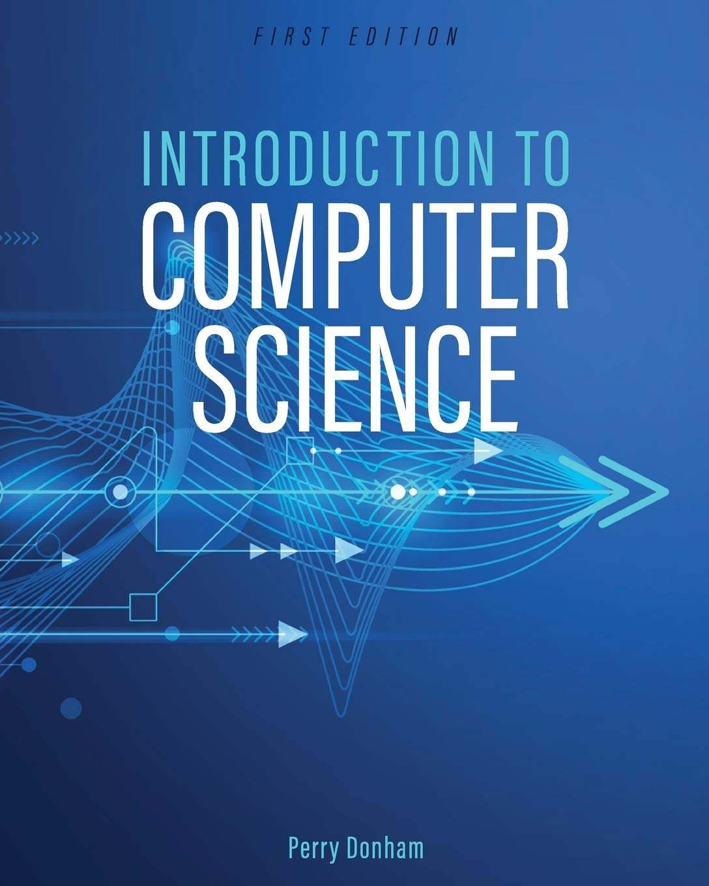
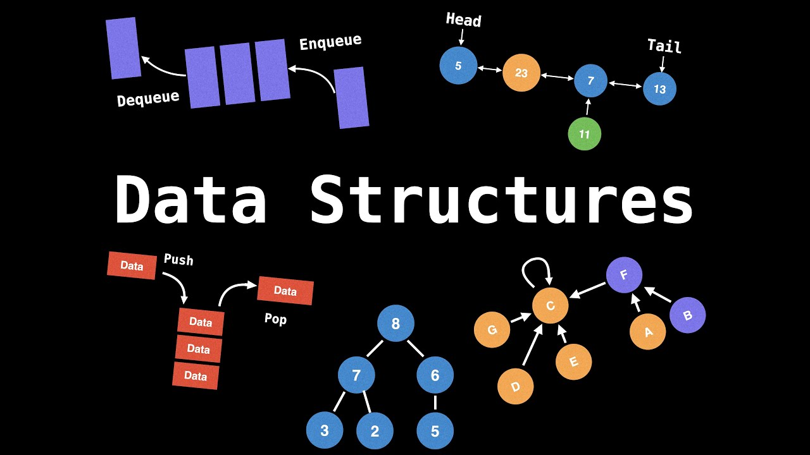
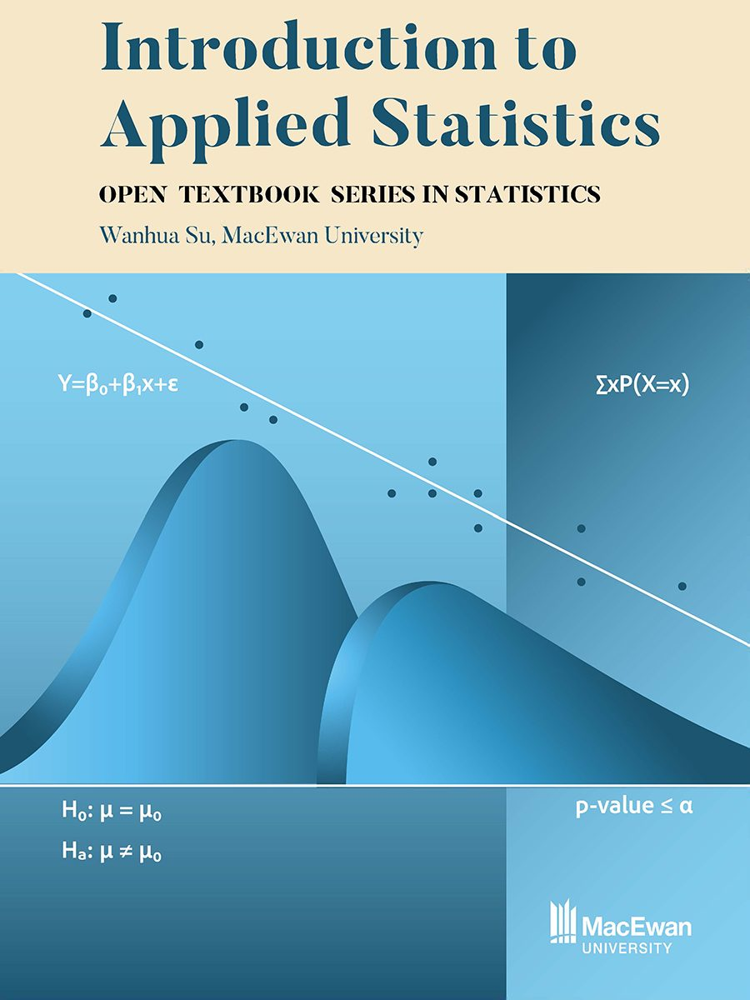
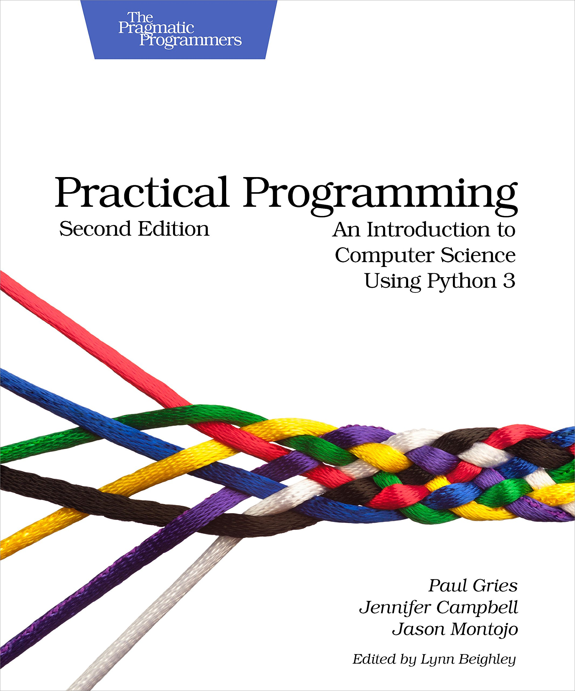

Our leading-edge programs offer practical connections at every step, balancing classroom theory and hands-on learning to produce confident, knowledgeable and skilled professionals
Browse NWP programsLooking to start a career in technology? The Computing Science program at Northwestern Polytechnic will give you the skills you need to start providing solutions to companies. The Computing Science programs at Northwestern Polytechnic offer students an opportunity to integrate classroom computer development skills with hands-on skills...
Visit NWP WebsiteThe Computing Science diploma program at Northwestern Polytechnic offers students an opportunity to integrate classroom computer development skills with hands-on skills. Emphasis on system programs include computer systems and design, networking, database...
Visit NWP WebsiteThe Bachelor of Computing Science degree program at Northwestern Polytechnic provides students with the hands-on skills needed to excel as a computing science professional. Explore a variety of different areas such as computer games, networking and communications..
Visit NWP Website
Credits: 3
Total Hours: 45

Credits: 4
Total Hours: 60

Credits: 3
Total Hours: 50

Credits: 4
Total Hours: 55